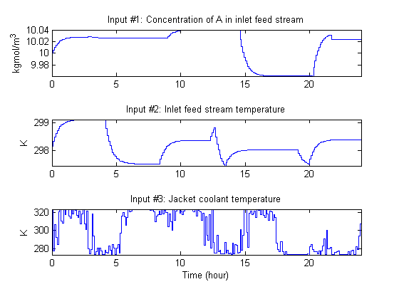
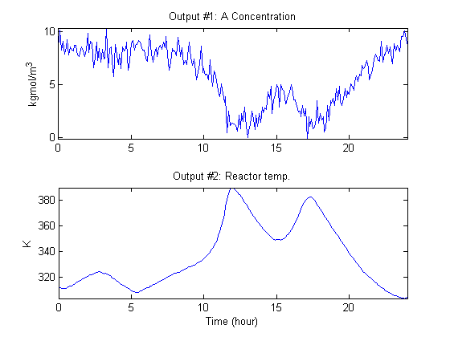
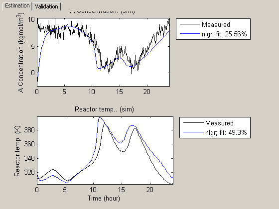
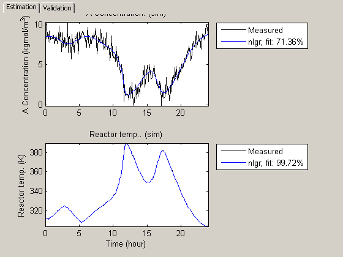
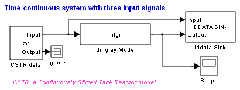
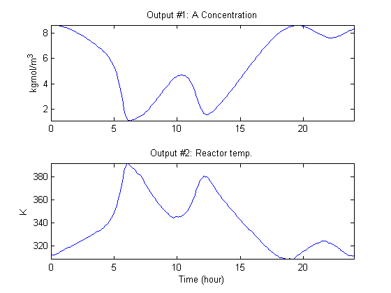

A Non-Adiabatic Continuous Stirred Tank Reactor: MATLAB File Modeling with Simulations in Simulink®
In this tutorial we use a chemical reaction system as a modeling basis to illustrate how to include and simulate an IDNLGREY model within Simulink®. However, the first modeling and identification part of the tutorial can be run without Simulink.
Contents
- Modeling A Non-Adiabatic Continuous Stirred Tank Reactor
- Modeling the CSTR
- Creating A Non-Adiabatic Continuous Stirred Tank Reactor IDNLGREY Object
- Input-Output Data
- Performance of the Initial CSTR Model
- Parameter Estimation
- Performance of the Estimated CSTR Model
- Simulation of the Estimated CSTR Model in Simulink
- Conclusions
- Additional Information
Modeling A Non-Adiabatic Continuous Stirred Tank Reactor
A rather common chemical system encountered in the process industry is the Continuously Stirred Tank Reactor (CSTR). Here we will study a jacketed diabatic (i.e., non-adiabatic) tank reactor described extensively in Bequette's book "Process Dynamics: Modeling, Analysis and Simulation", published by Prentice-Hall, 1998. The vessel is assumed to be perfectly mixed, and a single first-order exothermic and irreversible reaction, A --> B, takes place. A schematic diagram of the vessel and the surrounding cooling jacket is shown in a plot window. Notice that this is a sketch; in reality the coolant flow is, e.g., normally surrounding the whole reactor jacket, and not just the bottom of it.

Figure 1: Schematic diagram of a CSTR.
A model of the CSTR is required for more advanced control approaches. The inlet stream of reagent A is fed at a constant rate F. After stirring, the end product streams out of the vessel at the same rate as reagent A is fed into the tank (the volume V in the reactor tank is thus kept constant). The control strategy requires that the jacket temperature u_3(t) is manipulated in order to keep the concentration of reagent A y_1(t) at the desired level, in spite of disturbances arising from the inlet feed stream concentration and temperature (inputs u_1(t) and u_2(t), respectively). As the temperature in the tank y_2(t) can vary significantly during operation of the reactor, it is also desirable to ensure that this process variable is kept within reasonable limits.
Modeling the CSTR
The CSTR system is modeled using basic accounting and energy conservation principles. The change of the concentration of reagent A in the vessel per time unit d C_A(t)/dt (= d y_1(t)/dt) can be modeled as:
d C_A(t)
-------- = F/V*(C_Af(t)-C_A(t)) - r(t)
dtwhere the first term expresses concentration changes due to differences between the concentration of reagent A in the inlet stream and in the vessel, and the second term expresses concentration changes (reaction rate) that occurs due to the chemical reaction in the vessel. The reaction rate per unit volume is described by Arrhenius rate law:
r(t) = k_0*exp(-E/(R*T(t)))*C_A(t)
which states that the rate of a chemical reaction increases exponentially with the absolute temperature. k_0 is here an unknown nonthermal constant, E is the activation energy, R Boltzmann's ideal gas constant and T(t) (= y_2(t)) the temperature in the reactor.
Similarly, using the energy balance principle (assuming constant volume in the reactor), the temperature change per time unit d T(t)/dt in the reactor can be modeled as:
d T(t)
------ = F/V(T_f(t)-T(t)) - (H/c_p*rho)*r(t) - (U*A)/(c_p*rho*V)*(T(t)-T_j(t))
dtwhere the first and third terms describe changes due to that the feed stream temperature T_f(t) and the jacket coolant temperature T_j(t) differ from the reactor temperature, respectively. The second term is the influence on the reactor temperature caused by the chemical reaction in the vessel. In this equation, H is a heat of reaction parameter, c_p a heat capacity term, rho a density term, U an overall heat transfer coefficient and A the area for the heat exchange (coolant/vessel area).
Put together, the CSTR has three input signals:
u_1(t) = C_Af(t) Concentration of A in inlet feed stream [kgmol/m^3]. u_2(t) = T_f(t) Inlet feed stream temperature [K]. u_3(t) = T_j(t) Jacket coolant temperature [K].
and two output signals:
y_1(t) = C_A(t) Concentration of A in reactor tank [kgmol/m^3]. y_2(t) = T(t) Reactor temperature [K].
which also are the natural model states, i.e., y_1(t) = x_1(t) and y_2(t) = x_2(t).
After lumping together some of the original parameters we end up with eight different model parameters:
F Volumetric flow rate (volume/time) [m^3/h]. Fixed.
V Volume in reactor [m^3]. Fixed.
k_0 Pre-exponential nonthermal factor [1/h]. Free.
E Activation energy [kcal/kgmol]. Free.
R Boltzmann's gas constant [kcal/(kgmol*K)]. Fixed.
H Heat of reaction [kcal/kgmol]. Fixed.
HD = c_p*rho Heat capacity times density [kcal/(m^3*K)]. Free.
HA = U*A Overall heat transfer coefficient times tank
area [kcal/(m^3*K*h)] Free.Four of the parameters are here specified to be free (i.e., to be estimated). In practice, one could probably also determine the pre-exponential nonthermal factor k_0 and the activation energy E from bench scale experiments. This would then simplify the identification task to only consider two unknowns: the heat capacity c_p and the overall heat transfer coefficient U (which are inferred from HD and HA, respectively, as rho and A are known).
With the above introduced notation, the following state-space representation is obtained for the CSTR.
d x_1(t)
-------- = F/V*(u_1(t)-x_1(t)) - k_0*exp(-E/(R*x_2(t)))*x_1(t)
dt d x_2(t)
-------- = F/V(u_2(t)-x_2(t)) - (H/HD)*k_0*exp(-E/(R*x_2(t)))*x_1(t)
dt - (HA/(HD*V))*(x_2(t)-u_3(t)) y_1(t) = x_1(t)
y_2(t) = x_2(t)Creating A Non-Adiabatic Continuous Stirred Tank Reactor IDNLGREY Object
This information is entered into an file named cstr_m.m with the following contents.
function [dx, y] = cstr_m(t, x, u, F, V, k_0, E, R, H, HD, HA, varargin) %CSTR_M A non-adiabatic Continuous Stirred Tank Reactor (CSTR).
% Output equations.
y = [x(1); ... % Concentration of substance A in the reactor.
x(2) ... % Reactor temperature.
]; % State equations.
dx = [F/V*(u(1)-x(1))-k_0*exp(-E/(R*x(2)))*x(1); ...
F/V*(u(2)-x(2))-(H/HD)*k_0*exp(-E/(R*x(2)))*x(1)-(HA/(HD*V))*(x(2)-u(3)) ...
];An IDNLGREY object reflecting the modeling situation is next created.
FileName = 'cstr_m'; % File describing the model structure. Order = [2 3 2]; % Model orders [ny nu nx]. Parameters = [1; 1; 35e6; 11850; ... % Initial parameters. 1.98589; -5960; 480; 145]; InitialStates = [8.5695; 311.267]; % Initial initial states. Ts = 0; % Time-continuous system. nlgr = idnlgrey(FileName, Order, Parameters, InitialStates, Ts, 'Name', ... 'Non-adiabatic continuous stirred tank reactor model', ... 'TimeUnit', 'hours');
The inputs, states and outputs of the CSTR model structure are specified using the methods SET and SETINIT. We also specify that the initial states by default should be estimated.
set(nlgr, 'InputName', {'Concentration of A in inlet feed stream' ... % u(1). 'Inlet feed stream temperature' ... % u(2). 'Jacket coolant temperature'}, ... % u(3). 'InputUnit', {'kgmol/m^3' 'K' 'K'}); setinit(nlgr, 'Name', {'Concentration of A in reactor tank' ... % x(1). 'Reactor temperature'}); ... % x(2). setinit(nlgr, 'Unit', {'kgmol/m^3' 'K'}); setinit(nlgr, 'Fixed', {false false}); set(nlgr, 'OutputName', {'A Concentration' ... % y(1); Concentration of A in reactor tank 'Reactor temp.'}, ... % y(2). 'OutputUnit', {'kgmol/m^3' 'K'});
The parameters of the CSTR model structure are defined and F, V, R and H are specified to be fixed.
setpar(nlgr, 'Name', {'Volumetric flow rate (volume/time)' ... % F. 'Volume in reactor' ... % V. 'Pre-exponential nonthermal factor' ... % k_0. 'Activation energy' ... % E. 'Boltzmann''s ideal gas constant' ... % R. 'Heat of reaction' ... % H. 'Heat capacity times density' ... % HD. 'Overall heat transfer coefficient times tank area'}); ... % HA. setpar(nlgr, 'Unit', {'m^3/h' 'm^3' '1/h' 'kcal/kgmol' 'kcal/(kgmol*K)' ... 'kcal/kgmol' 'kcal/(m^3*K)' 'kcal/(m^3*K*h)'}); nlgr.Parameters(1).Fixed = true; % Fix F. nlgr.Parameters(2).Fixed = true; % Fix V. nlgr.Parameters(5).Fixed = true; % Fix R. nlgr.Parameters(6).Fixed = true; % Fix H.
Through physical reasoning we also know that all but the heat of reaction parameter (always negative because the reaction is exothermic) are positive. Let us also incorporate this (somewhat crude) knowledge into our CSTR model structure:
nlgr.Parameters(1).Minimum = 0; % F. nlgr.Parameters(2).Minimum = 0; % V. nlgr.Parameters(3).Minimum = 0; % k_0. nlgr.Parameters(4).Minimum = 0; % E. nlgr.Parameters(5).Minimum = 0; % R. nlgr.Parameters(6).Maximum = 0; % H. nlgr.Parameters(7).Minimum = 0; % HD. nlgr.Parameters(8).Minimum = 0; % HA.
A summary of the entered CSTR model structure is next obtained through the PRESENT command:
present(nlgr);
Time-continuous nonlinear state-space model defined by 'cstr_m' (MATLAB file):
dx/dt = F(t, u(t), x(t), p1, ..., p8)
y(t) = H(t, u(t), x(t), p1, ..., p8) + e(t)
with 3 inputs, 2 states, 2 outputs, and 4 free parameters (out of 8).
Inputs:
u(1) Concentration of A in inlet feed stream(t) [kgmol/m^3]
u(2) Inlet feed stream temperature(t) [K]
u(3) Jacket coolant temperature(t) [K]
States: initial value
x(1) Concentration of A in reactor tank(t) [kgmol/m^3] xinit@exp1 8.5695 (est) in [-Inf, Inf]
x(2) Reactor temperature(t) [K] xinit@exp1 311.267 (est) in [-Inf, Inf]
Outputs:
y(1) A Concentration(t) [kgmol/m^3]
y(2) Reactor temp.(t) [K]
Parameters: value
p1 Volumetric flow rate (volume/time) [m^3/h] 1 (fix) in [0, Inf]
p2 Volume in reactor [m^3] 1 (fix) in [0, Inf]
p3 Pre-exponential nonthermal factor [1/h] 3.5e+007 (est) in [0, Inf]
p4 Activation energy [kcal/kgmol] 11850 (est) in [0, Inf]
p5 Boltzmann's ideal gas constant [kcal/(kgmo..] 1.98589 (fix) in [0, Inf]
p6 Heat of reaction [kcal/kgmol] -5960 (fix) in [-Inf, 0]
p7 Heat capacity times density [kcal/(m^3*K)] 480 (est) in [0, Inf]
p8 Overall heat transfer coefficient times tank area [kcal/(m^3*..] 145 (est) in [0, Inf]
Created: 29-Jun-2010 23:43:51
Last modified: 29-Jun-2010 23:43:51
Input-Output Data
System identification experiment design for many nonlinear systems is typically much more involved than for linear systems. This is also true for the CSTR, where on one hand it is desired that the controllable input u_3 is such that it excites the system sufficiently and on the other hand it must be chosen to be "plant-friendly" (the chemical process must be kept stable, the duration of the test should be as short as possible so as to influence the production least, and so forth). The article:
M.W. Braun, R. Ortiz-Mojica and D.E. Rivera, "Application of minimum crest factor multisinusoidal signals for "plant-friendly" identification of nonlinear process systems", in "Control Engineering Practice", no. 10, 2002.
discusses the choice of input signals to the CSTR. There it is argued that a multi-sinusoidal input u_3 is advantageous to a multi-level pseudo random input signal for several reasons. In the identification experiments below we will use two such input signals, one for estimation and one for validation purposes, that were generated through a MATLAB® input data generation tool (a GUI) kindly provided by the authors of the mentioned article.
We load this CSTR data and place it in two different IDDATA objects, ze for estimation and zv for validation purposes:
load(fullfile(matlabroot, 'toolbox', 'ident', 'iddemos', 'data', 'cstrdata')); Ts = 0.1; % 10 samples per hour! ze = iddata(y1, u1, 0.1, 'Name', 'Non-adiabatic continuous stirred tank reactor estimation data'); set(ze, 'InputName', nlgr.InputName, 'InputUnit', nlgr.InputUnit); set(ze, 'OutputName', nlgr.OutputName, 'OutputUnit', nlgr.OutputUnit); set(ze, 'Tstart', 0, 'TimeUnit', 'hour', 'ExperimentName', 'Estimation'); zv = iddata(y2, u2, 0.1, 'Name', 'Non-adiabatic continuous stirred tank reactor validation data'); set(zv, 'InputName', nlgr.InputName, 'InputUnit', nlgr.InputUnit); set(zv, 'OutputName', nlgr.OutputName, 'OutputUnit', nlgr.OutputUnit); set(zv, 'Tstart', 0, 'TimeUnit', 'hour', 'ExperimentName', 'Validation');
The inputs and outputs of the estimation data set ze are shown in two plots.
figure('Name', [ze.Name ': input data']); for i = 1:ze.Nu subplot(ze.Nu, 1, i); plot(ze(:, [], i)); title(['Input #' num2str(i) ': ' ze.InputName{i}]); xlabel(''); axis('tight'); end xlabel([ze.Domain ' (' ze.TimeUnit ')']);
Figure 2: Estimation data set inputs to a CSTR.
figure('Name', [ze.Name ': output data']); for i = 1:ze.Ny subplot(ze.Ny, 1, i); plot(ze(:, i, [])); title(['Output #' num2str(i) ': ' ze.OutputName{i}]); xlabel(''); axis('tight'); end xlabel([ze.Domain ' (' ze.TimeUnit ')']);
Figure 3: Estimation data set outputs from a CSTR.
Before we proceed with the identification experiments, we should mention that the generated input signals force the outputs of the CSTR to display a lot of the reactor nonlinearities (with temperature changes of around 80 degrees overall and causing some of the "ignition" phenomena of the reactor to be evident). Whereas this excites the reactor (typically good from an identification point of view), it is probably not the way in which engineers would like to operate a real-world reactor, especially not one that is as exothermic as this one. Using the guidelines described in Braun et al. (2002), one could then redesign the experiment before it is actually carried out. In this case, it would be interesting to try to reduce the duration of the experiment and use multi-sinusoidal input signals with shorter cycle lengths. The aim is to reduce the low-frequency content of the controllable input signal so as to reduce the variations in the reactor outputs.
Performance of the Initial CSTR Model
How good is the initial CSTR model? Let us investigate this by simulating the initial model using the input signals of ze and zv and compare the computed outputs with the true outputs (obtained by simulating the above IDNLGREY model using other parameters and adding some noise) contained in ze and zv, respectively. Notice that calling COMPARE with two input arguments leads to that the whole initial state vector of the model for each experiment is estimated.
figure; compare(merge(ze, zv), nlgr);
Figure 4: Comparison between the true outputs and the simulated outputs of the initial CSTR model.
Parameter Estimation
The agreement between true and simulated outputs of the initial CSTR model is decent. To further improve it, we estimate the four free model parameters as well as the initial state vector of the model by using the estimation data set ze. We instruct PEM to display iteration information in the MATLAB command window and to perform at most 25 search iterations.
nlgr = pem(ze, nlgr, 'Display', 'On', 'MaxIter', 25);
Criterion: Trace minimization
Scheme: Trust-Region Reflective Newton (LSQNONLIN, LargeScale = 'On')
--------------------------------------------------------------
Norm of First-order
Iteration Cost step optimality
--------------------------------------------------------------
0 112.535 - -
1 65.3952 10 5.58e+005
2 15.9924 20 2.42e+005
3 1.91793 40 199
4 0.709147 80 5.44e+004
5 0.319552 37.1 5.05e+003
6 0.31605 4.45 2.11e+004
7 0.315986 0.908 1.91e+004
8 0.315986 0.227 1.91e+004
9 0.315986 0.0567 1.91e+004
10 0.315986 0.0142 1.91e+004
11 0.315986 0.00355 1.91e+004
12 0.315986 0.000886 1.91e+004
13 0.315986 0.000222 1.91e+004
14 0.315986 5.54e-005 1.91e+004
15 0.315986 1.39e-005 1.91e+004
16 0.315986 3.46e-006 1.91e+004
17 0.315986 8.66e-007 1.91e+004
18 0.315986 2.16e-007 1.91e+004
19 0.315986 5.41e-008 1.91e+004
20 0.315986 1.35e-008 1.91e+004
21 0.315986 3.38e-009 1.91e+004
22 0.315986 8.45e-010 1.91e+004
23 0.315986 2.11e-010 1.91e+004
24 0.315986 5.28e-011 1.91e+004
25 0.315986 1.32e-011 1.91e+004
--------------------------------------------------------------
If desired, the search can always be continued via a second call to PEM. This time PEM is instructed to not display any iteration information and to only carry out at most 5 more iterations.
nlgr = pem(ze, nlgr, 'Display', 'Off', 'MaxIter', 5);
Performance of the Estimated CSTR Model
To evaluate the performance of the estimated model we once again use COMPARE:
figure compare(merge(ze, zv), nlgr);
Figure 5: Comparison between the true outputs and the simulated outputs of the estimated CSTR model.
Visual inspection immediately reveals that the outputs of the estimated model are close to the true outputs, both for ze and zv. The improvement is especially significant for the validation data set, where the model fits have increased from negative values to around 70% and 99%, respectively, for the two model outputs.
Further information about the estimated CSTR model is next returned by PRESENT:
present(nlgr);
Time-continuous nonlinear state-space model defined by 'cstr_m' (MATLAB file):
dx/dt = F(t, u(t), x(t), p1, ..., p8)
y(t) = H(t, u(t), x(t), p1, ..., p8) + e(t)
with 3 inputs, 2 states, 2 outputs, and 4 free parameters (out of 8).
Inputs:
u(1) Concentration of A in inlet feed stream(t) [kgmol/m^3]
u(2) Inlet feed stream temperature(t) [K]
u(3) Jacket coolant temperature(t) [K]
States: initial value
x(1) Concentration of A in reactor tank(t) [kgmol/m^3] xinit@exp1 8.60701 (est) in [-Inf, Inf]
x(2) Reactor temperature(t) [K] xinit@exp1 311.188 (est) in [-Inf, Inf]
Outputs:
y(1) A Concentration(t) [kgmol/m^3]
y(2) Reactor temp.(t) [K]
Parameters: value standard dev
p1 Volumetric flow rate (volume/time) [m^3/h] 1 0 (fix) in [0, Inf]
p2 Volume in reactor [m^3] 1 0 (fix) in [0, Inf]
p3 Pre-exponential nonthermal factor [1/h] 3.56314e+007 6827.28 (est) in [0, Inf]
p4 Activation energy [kcal/kgmol] 11854.9 0.0310496 (est) in [0, Inf]
p5 Boltzmann's ideal gas constant [kcal/(kgmo..] 1.98589 0 (fix) in [0, Inf]
p6 Heat of reaction [kcal/kgmol] -5960 0 (fix) in [-Inf, 0]
p7 Heat capacity times density [kcal/(m^3*K)] 500.479 0.0836654 (est) in [0, Inf]
p8 Overall heat transfer coefficient times tank area [kcal/(m^3*..] 150.16 0.0332088 (est) in [0, Inf]
The model was estimated from the data set 'Non-adiabatic continuous stirred tank reactor estimation data', which
contains 241 data samples.
Loss function 0.0035168 and Akaike's FPE 0.00363354
Created: 29-Jun-2010 23:43:51
Last modified: 29-Jun-2010 23:44:24
if ~idchecksimulinkinstalled disp('The remainder of this tutorial requires Simulink.'); return; end
Simulation of the Estimated CSTR Model in Simulink
An IDNLGREY model can also be imported and used within Simulink. The Simulink model cstr_sim.mdl imports the validation data set zv and passes its data to a Simulink IDNLGREY model block, which when simulated produces outputs that together with the used input signals are stored in the MATLAB workspace in the IDDATA object zsim. (The last five lines of code below are used to ensure that the proper model inputs are fed to the Simulink model. This is only needed if idnlgreydemo9 is run within a function, where access to zv and nlgr cannot be guaranteed.)
open('cstr_sim'); if ~evalin('base', 'exist(''zv'', ''var'')') cstrws = get_param(bdroot, 'modelworkspace'); cstrws.assignin('zv', zv); cstrws.assignin('nlgr', nlgr); end
Figure 6: Simulink model containing the estimated CSTR model.
The generic IDNLGREY Simulink library block is found in the standard system identification Simulink library and can be copied to and used in any Simulink model. For example, in the CSTR case it could very well be used in a closed-loop control arrangement.
The IDNLGREY block must be configured before it is simulated. This is done by entering the MATLAB workspace variable holding the IDNLGREY model (here nlgr) or by defining a proper IDNLGREY model object using the idnlgrey constructor in the parameter edit box labeled "IDNLGREY model". Here it is also possible to specify the initial state vector to use (default is the internally stored initial state vector of the specified IDNLGREY object).
An IDNLGREY model object stores the properties specifying the setup of the differential/difference equation solver used by SIM, PREDICT, PEM and so on (try nlgr.Algorithm.SimulationOptions). In Simulink, these settings are always overridden so that the options of the Simulink specified solver are used. If the IDNLGREY model object specifies and uses a different solver, then the simulation result obtained in Simulink might be different to that obtained with IDNLGREY/SIM in MATLAB. An example illustrating this is provided in the tutorial idnlgreydemo10.
With the solver options settled, we can next perform a command prompt simulation of the cstr_sim Simulink model (which here will be conducted for the estimated CSTR model). (The evalin call is needed to retrieve zsim in case idnlgreydemo9 is run within a function.)
sim('cstr_sim'); if ~exist('zsim', 'var') zsim = evalin('base', 'zsim'); end set(zsim, 'InputName', nlgr.InputName, 'InputUnit', nlgr.InputUnit); set(zsim, 'OutputName', nlgr.OutputName, 'OutputUnit', nlgr.OutputUnit); set(zsim, 'TimeUnit', 'hour');
Let us finally conclude the example by plotting the Simulink obtained simulation result.
figure('Name', 'Simulink simulation result of estimated CSTR model'); for i = 1:zsim.Ny subplot(zsim.Ny, 1, i); plot(zsim(:, i, [])); title(['Output #' num2str(i) ': ' zsim.OutputName{i}]); xlabel(''); axis('tight'); end xlabel([zsim.Domain ' (' zsim.TimeUnit ')']);
Figure 7: Outputs obtained by simulating the estimated CSTR model in Simulink.
Conclusions
This tutorial has covered modeling and identification of a non-adiabatic continuous stirred tank reactor. In particular, it was illustrated how to import and use an IDNLGREY model within Simulink.
Additional Information
For more information on identification of dynamic systems with System Identification Toolbox™ visit the System Identification Toolbox product information page.